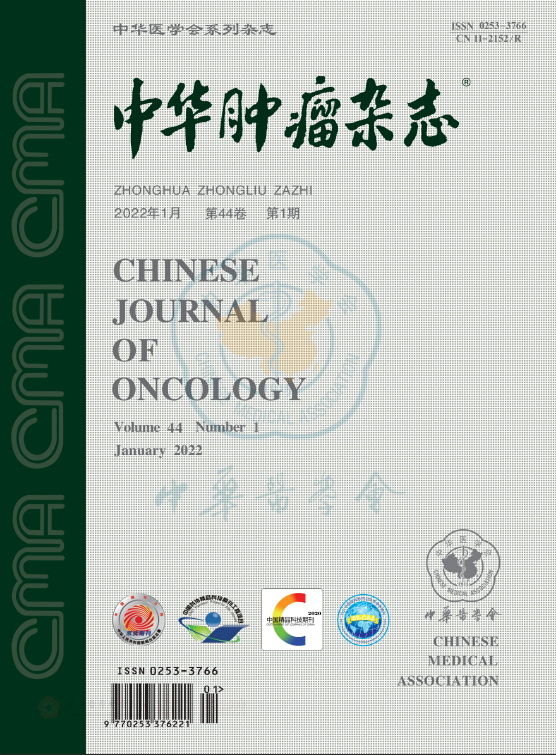
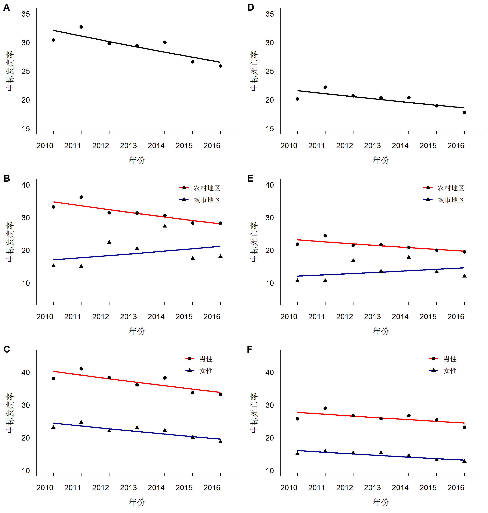

2010-2016年食管癌发病与死亡情况趋势分析
中文论文
第一作者
肿瘤登记
食管癌
中华肿瘤杂志
摘要
河南省在全国也属于食管癌高发省份，河南省的北部太行山区、伏牛山等地区食管癌死亡率均较高。2016年河南省肿瘤登记地区已经覆盖全省人口的近25%，本文描述了河南省肿瘤登记地区食管癌的发病和死亡情况以及2010-2016的变化趋势，为河南省食管癌的防控提供信息。
目的
根据河南省肿瘤登记数据估算河南省2016年食管癌发病和死亡情况，分析2010—2016年食管癌发病和死亡变化趋势。
方法
按照《中国肿瘤登记手册》以及国际癌症研究中心的登记质量标准评估2016年河南省肿瘤登记数据的完整性、有效性和可靠性，按照国际疾病分类10编码（C15）提取食管癌数据，并分城乡、性别、年龄组计算登记人群食管癌发病率和死亡率，结合2016年全省人口数据估算全省食管癌发病、死亡情况。人口标准化率按照2000年中国标准人口结构（中标率）和Segi’s 世界标准人口结构（世标率）进行计算。采用Joinpoint模型估计食管癌中标发病率和中标死亡率年度变化百分比（APC）。
结果
2016年河南省食管癌新发病例数为4.01万例，占河南省全部恶性肿瘤新发病例的13.46%，位于全部恶性肿瘤发病的第3位。食管癌粗发病率为37.21/10万，中标率为26.74/10万，世标率为27.12/10万；男性发病率高于女性，男性和女性中标发病率分别为34.53/10万和19.19/10万；农村地区发病率高于城市地区，中标率分别为28.13/10万和20.90/10万。河南省2016年食管癌死亡病例数为2.93万例，占河南省全部恶性肿瘤死亡的15.61%，位于全部恶性肿瘤死亡的第3位。食管癌粗死亡率为27.14/10万，中标率为18.74/10万，世标率为18.78/10万；男性死亡率高于女性，中标率分别为24.78/10万和13.12/10万；农村地区高于城市地区，食管癌中标死亡率分别为19.48/10万和15.73/10万。2010—2016年间，河南省食管癌中标发病率（APC=-3.12%, 95%CI:-5.30~ -0.90, P=0.01）和中标死亡率（APC=-2.47%, 95CI:-4.70~ -0.20, P=0.04）平均每年分别下降3.12%和2.47%；不同地区变化趋势不同，农村地区中标发病率和死亡率均呈现下降趋势，而城市地区变化趋势无统计学意义；男性和女性中标发病率和死亡率变化趋势相同，均呈现下降趋势。
结论
近年来河南省食管癌发病和死亡呈下降趋势，但是其疾病负担仍然较重，农村地区为食管癌高发区，应坚持“以预防为主”和“以农村为重点”的原则，开展食管癌防控工作。
【关键词】食管肿瘤；发病；死亡；河南省主要结果图
